☰
Carreras
Senderismo
Alojamientos
Impacto económico
Inscripciones
Tu navegador no soporta video HTML5.
Corre por el
Camino Mozárabe de La Subbética Cordobesa
52 kilómetros o 25 kilómetros
28 de Marzo 2026
INSCRIBIRSE AHORA
Albergue El Tren
En la misma estación de la Vía Verde de Cabra
WEB
Facebook
Instagram
Mencía EcoTurismo (Autocaravanas)
En la misma estación de la Vía Verde de Doña Mencía
WEB
Facebook
Casa El Barco
En Encinas Reales, a escasos metros de la zona de carrera
WEB
Facebook
Instagram
Centro de Ocio Alúa | Bungalows o parcelas
Situado en Benamejí a 6 kilómetros (7 minutos en coche) de Encinas Reales
WEB
Facebook
Instagram
Hostal Casa Morejón
Situado en Doña Mencía
957676169
Nuestros Patrocinadores
Patrocinadores Oficiales
Patrocinadores

Colaboradores
